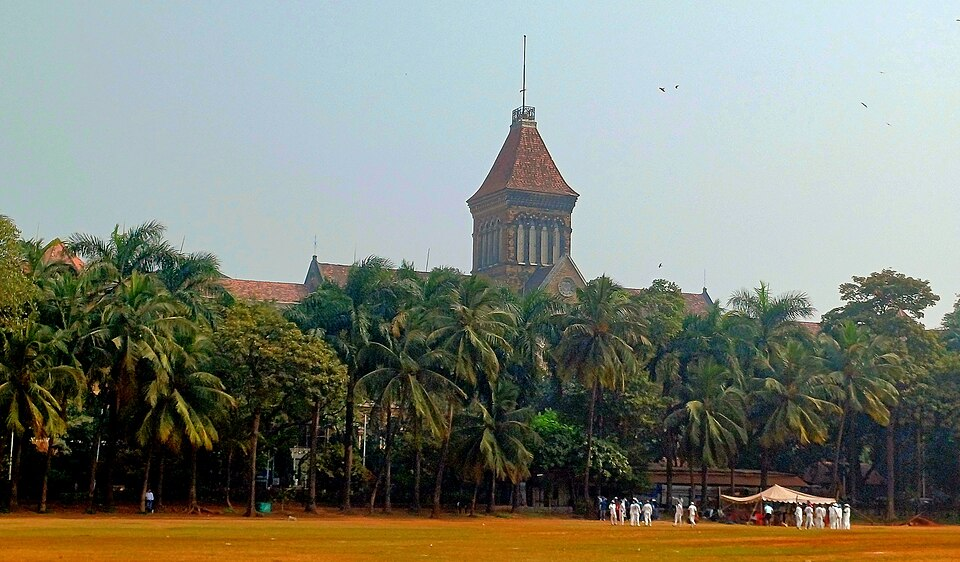

राष्ट्रीय
राष्ट्रीयसंसद सत्र का प्रस्ताव, लोकसभा 30 नवंबर और राज्यसभा 2 दिसंबर को बैठेगी
केंद्रीय मंत्री किरेन रिजिजू ने बताया कि सरकार ने लोकसभा स्पीकर और राज्यसभा के सभापति से संसद के दोनों सदनों की बैठकें फिर से बुलाने का अनुरोध किया है।
ताज़ा ख़बरें
सुधांशु त्रिवेदी ने समाजवादी पार्टी के 2027 घोषणापत्र पर उठाए सवाल
भाजपा नेता सुधांशु त्रिवेदी ने समाजवादी पार्टी के नए घोषणापत्र को महज एक औपचारिकता बताया है। उन्होंने विपक्षी दलों पर वादे पूरे न करने का आरोप लगाया है।
 खेल
खेलसैयद मुश्ताक अली ट्रॉफी: मुंबई और विदर्भ ने नॉकआउट में बनाई जगह
सैयद मुश्ताक अली ट्रॉफी 2026-27 के एलीट ग्रुप-D से मुंबई और विदर्भ ने नॉकआउट चरण में प्रवेश कर लिया है। दोनों टीमों के 26-26 अंक रहे, लेकिन बेहतर नेट रन रेट के कारण मुंबई शीर्ष पर रहा।
राष्ट्रीयमध्य प्रदेश: नागौद SDM सोमेश द्विवेदी और ब्यौहारी SDM अर्चना मिश्रा परिणय सूत्र में बंधे
मध्य प्रदेश के नागौद SDM सोमेश द्विवेदी और ब्यौहारी SDM अर्चना मिश्रा विवाह बंधन में बंध गए हैं। रीवा में कॉलेज के दिनों से शुरू हुई उनकी दोस्ती प्रशासनिक सेवा तक पहुंची और अब शादी में बदल गई है।
 राष्ट्रीय
राष्ट्रीयसपा ने जारी किया 2027 चुनाव का मैनिफ़ेस्टो, आज़म ख़ान ने जेल के दिनों को किया याद
समाजवादी पार्टी ने 2027 के उत्तर प्रदेश विधानसभा चुनाव के लिए अपना मैनिफ़ेस्टो जारी कर दिया है। इस दौरान वरिष्ठ नेता आज़म ख़ान ने जेल में बिताए अपने दिनों का ज़िक्र करते हुए अखिलेश यादव की तारीफ़ की।
राष्ट्रीयसंसद का विशेष सत्र, लोकसभा 30 नवंबर और राज्यसभा 2 दिसंबर को होगी शुरू
केंद्र सरकार ने संसद का विशेष सत्र बुलाया है। इसके तहत लोकसभा की कार्यवाही 30 नवंबर से और राज्यसभा की कार्यवाही 2 दिसंबर से शुरू होगी।
राष्ट्रीयकेंद्र सरकार ने बुलाई संसद के दोनों सदनों की एक-एक दिन की बैठक
केंद्र सरकार ने संसद का एक-एक दिन का सत्र बुलाया है। लोकसभा की बैठक 30 नवंबर और राज्यसभा की बैठक 2 दिसंबर को होगी। महिला आरक्षण बिल लाए जाने की अटकलें लगाई जा रही हैं।
राष्ट्रीयउत्तराखंड की गरतांग गली: 11 हजार फीट की ऊंचाई पर स्थित ऐतिहासिक लकड़ी का रास्ता
उत्तराखंड के उत्तरकाशी जिले में स्थित गरतांग गली लगभग 11,000 फीट की ऊंचाई पर बना एक ऐतिहासिक लकड़ी का रास्ता है, जो अपनी प्राकृतिक खूबसूरती और ट्रेकिंग के लिए प्रसिद्ध है।
अंतरराष्ट्रीयईरान में प्रदर्शनों के बाद मौत की सजा का सामना कर रही महिलाएं
ईरान में सरकार विरोधी प्रदर्शनों के बाद मौत की सजा का सामना कर रही कुछ महिलाओं ने जेल से मदद की गुहार लगाई है। मानवाधिकार संगठनों ने सजाओं में बढ़ोतरी पर चिंता जताई है।
राष्ट्रीयउत्तर प्रदेश चुनाव 2027: समाजवादी पार्टी ने जारी किया घोषणापत्र, किए कई बड़े वादे
समाजवादी पार्टी ने 2027 के उत्तर प्रदेश विधानसभा चुनाव के लिए घोषणापत्र जारी किया है। इसमें 25 लाख सरकारी नौकरियों और युवाओं को ₹5,000 मासिक भत्ता देने का वादा किया गया है।
राष्ट्रीयसमान नागरिक संहिता पर अमित शाह का राहुल गांधी पर तीखा हमला
केंद्रीय गृह मंत्री अमित शाह ने कांग्रेस और राहुल गांधी पर समान नागरिक संहिता का विरोध करने का आरोप लगाया है। उन्होंने कहा कि भाजपा शासित सभी राज्य जल्द ही इसे लागू करेंगे।
 अंतरराष्ट्रीय
अंतरराष्ट्रीयमिस्र की राजधानी काहिरा में टैंकर पलटने से भीषण आग, 31 लोगों की मौत
मिस्र की राजधानी काहिरा की रिंग रोड पर ईंधन ले जा रहे एक टैंकर के पलटने और उसमें आग लगने से 31 लोगों की मौत हो गई, जबकि 21 अन्य घायल हुए हैं।
राष्ट्रीययूपी चुनाव 2027: समाजवादी पार्टी ने अपने सभी वादे पूरे किए, अखिलेश यादव का दावा
उत्तर प्रदेश विधानसभा चुनाव 2027 से पहले समाजवादी पार्टी के प्रमुख अखिलेश यादव ने घोषणापत्र जारी करते हुए दावा किया कि उनकी पार्टी ने अतीत में अपने हर वादे को जमीन पर उतारा है।
राष्ट्रीयसुप्रीम कोर्ट के आदेश के बाद आनंद मोहन और अनंत सिंह को करना होगा सरेंडर
सुप्रीम कोर्ट द्वारा रिहाई रद्द किए जाने के बाद पूर्व सांसद आनंद मोहन को एक महीने में सरेंडर करना होगा। वहीं, अनंत सिंह को दुलार चंद यादव हत्याकांड में 4 दिसंबर 2026 तक आत्मसमर्पण करना है।
खेलन्यूजीलैंड के खिलाफ दूसरे टेस्ट से बाहर रह सकते हैं मोहम्मद सिराज
न्यूजीलैंड के खिलाफ दूसरे टेस्ट मैच में तेज गेंदबाज मोहम्मद सिराज के खेलने की संभावना कम है, जबकि गुरनूर ब्रार को डेब्यू का मौका मिल सकता है।
अंतरराष्ट्रीयभारत में पाकिस्तानी ड्रामा 'दर-ए-निजात' की स्क्रीनिंग रद्द, बढ़ा सांस्कृतिक विवाद
बेंगलुरु में पाकिस्तानी ड्रामा 'दर-ए-निजात' की दो निजी स्क्रीनिंग ऑनलाइन विरोध और पुलिस जांच के बाद रद्द कर दी गई हैं। इसके साथ ही नेटफ्लिक्स पर आने वाली पाकिस्तानी सीरीज़ के विरोध ने सांस्कृतिक रिश्तों पर पुरानी बहस को फिर से शुरू कर दिया है।
 राष्ट्रीय
राष्ट्रीयतिरुपति मंदिर में चेन्नई के दंपती ने दिया 121 किलो सोना, कीमत ₹208 करोड़
चेन्नई के कारोबारी वर्धमान जैन और उनकी पत्नी राधिका जैन ने तिरुपति मंदिर में 121 किलो सोने के आभूषण दान किए हैं। टीटीडी के इतिहास में किसी एक भक्त द्वारा दिया गया यह अब तक का सबसे बड़ा दान है।
 राष्ट्रीय
राष्ट्रीयबिना मंजूरी वाले पद पर स्थायी नियुक्ति का दावा नहीं कर सकते: सुप्रीम कोर्ट
सुप्रीम कोर्ट ने स्पष्ट किया है कि कर्मचारी केवल योग्यता पूरी करने के आधार पर बिना मंजूरी वाले पद पर स्थायी नियुक्ति या समायोजन की मांग नहीं कर सकता है।
 व्यापार
व्यापारहुंडई क्रेटा एन लाइन का नया मॉडल टेस्टिंग के दौरान आया नजर
हुंडई की आने वाली नई क्रेटा एन लाइन को दक्षिण कोरिया में टेस्टिंग के दौरान पहली बार देखा गया है। इस स्पोर्टी एसयूवी के साल 2027 में लॉन्च होने की उम्मीद है।
राष्ट्रीयरवि किशन ने किया खुलासा, सार्वजनिक कार्यक्रमों में क्यों बचते हैं मनोज तिवारी से
अभिनेता और सांसद रवि किशन ने एक टॉक शो के दौरान खुलासा किया कि वह और मनोज तिवारी सार्वजनिक कार्यक्रमों में आमने-सामने आने से बचते हैं।
 व्यापार
व्यापारभारत में खुदरा महंगाई बढ़कर 6.09 फ़ीसदी हुई, खाद्य महंगाई में भी तेज़ उछाल
भारत में अक्तूबर महीने में खुदरा महंगाई दर बढ़कर 6.09 फ़ीसदी पर पहुंच गई है, जबकि खाद्य महंगाई दर 8.94 फ़ीसदी दर्ज की गई। ग्रामीण इलाकों में इसका असर सबसे ज्यादा देखने को मिल रहा है।
 राष्ट्रीय
राष्ट्रीयनेटफ्लिक्स से सरकार की दो टूक, भारत में पाकिस्तानी कंटेंट का प्रसारण न हो
केंद्र सरकार ने नेटफ्लिक्स को निर्देश दिया है कि वह भारत में पाकिस्तानी कंटेंट न दिखाए। सूचना एवं प्रसारण मंत्रालय ने पहलगाम हमले के बाद जारी 2025 की एडवाइजरी का पालन करने को कहा है।
अंतरराष्ट्रीयडोकलाम के पूर्व में चीन की सक्रियता, भूटान की तोर्सा घाटी में दिखी हलचल
ताजा सैटेलाइट तस्वीरों से भूटान की तोर्सा नदी घाटी में चीन की नई गतिविधियों के संकेत मिले हैं। डोकलाम के पूर्व में जमीन साफ होने से रणनीतिक चिंताएं बढ़ गई हैं।
टेकसर्दियों में पौधों की देखभाल के लिए अपनाएं कार्डबोर्ड हैक
सर्दियों के मौसम में पौधों और उनकी जड़ों को ठंड से बचाने के लिए ऑनलाइन शॉपिंग के पुराने गत्तों का उपयोग मल्चिंग के रूप में किया जा सकता है।
राष्ट्रीयभारत तिवारी एनकाउंटर मामला: न्याय की मांग को लेकर 27 नवंबर से भूख हड़ताल करेंगी मां
भोजपुर के भारत तिवारी एनकाउंटर मामले में न्याय न मिलने से नाराज मां आशा देवी 27 नवंबर से अनिश्चितकालीन भूख हड़ताल शुरू करेंगी। उन्होंने सरकार और प्रशासन पर वादाखिलाफी का आरोप लगाया है।
 खेल
खेलदक्षिण अफ्रीका के वियान मुल्डर ने टेस्ट मैच में बनाया अनोखा रिकॉर्ड
दक्षिण अफ्रीका के ऑलराउंडर वियान मुल्डर ने टेस्ट मैच की एक पारी में शतक और सात विकेट लेकर खास उपलब्धि हासिल की है। इस फेहरिस्त में रविचंद्रन आश्विन इकलौते भारतीय हैं।
राष्ट्रीयसिक्किम के मुख्यमंत्री प्रेम सिंह तमांग की मां धनमाया का निधन
सिक्किम के मुख्यमंत्री प्रेम सिंह तमांग की मां धनमाया तमांग का 87 वर्ष की उम्र में सिलीगुड़ी के एक अस्पताल में निधन हो गया है। वह पिछले कुछ समय से बीमार चल रही थीं।
राष्ट्रीयईडी की संपत्ति कुर्की पर सुप्रीम कोर्ट ने जताई चिंता, मांगा जवाब
सुप्रीम कोर्ट ने एक साल में ईडी द्वारा करीब 400 संपत्तियों की कुर्की के मामलों पर सवाल उठाया है। अदालत ने पूछा कि एक अधिकारी इतनी बड़ी संख्या में मामलों का फैसला कैसे कर सकता है।
 खेल
खेलबांग्लादेश और दक्षिण अफ्रीका के बीच टेस्ट मैच में तीखी नोकझोंक
दक्षिण अफ्रीका और बांग्लादेश के बीच खेले गए दूसरे टेस्ट मैच के दौरान वियान मुल्डर और तास्कुिन अहमद के बीच मैदान पर तीखी बहस हुई, जिसके बाद खिलाड़ियों ने मैच के बाद हाथ भी नहीं मिलाया।
राष्ट्रीयनेटफ्लिक्स से पाकिस्तानी कंटेंट हटाने को कहा गया, मंत्रालय ने दी चेतावनी
केंद्र सरकार ने नेटफ्लिक्स को भारत में पाकिस्तानी कंटेंट प्रसारित न करने के निर्देश दिए हैं। यह कदम वेब सीरीज 'जो बच्चे हैं संग समेट लो' को लेकर आई शिकायतों के बाद उठाया गया है।
 अंतरराष्ट्रीय
अंतरराष्ट्रीयरूस-यूक्रेन युद्ध: मेलानिया ट्रंप की पहल से नौ और बच्चे अपने परिवारों से मिले
रूस-यूक्रेन युद्ध के दौरान बिछड़े नौ और बच्चों को उनके परिवारों से मिला दिया गया है। यह अमेरिकी प्रथम महिला मेलानिया ट्रंप की पहल का हिस्सा है, जिसके तहत परिवारों को फिर से जोड़ा जा रहा है।
राष्ट्रीयसंविधान दिवस पर भाजपा मनाएगी गौरव दिवस, कांग्रेस निकालेगी रक्षा मार्च
संविधान दिवस के अवसर पर 26 नवंबर को देश भर में विभिन्न राजनीतिक कार्यक्रम आयोजित किए जा रहे हैं। भाजपा गौरव दिवस मनाएगी, वहीं कांग्रेस संविधान रक्षा मार्च निकालेगी।

राष्ट्रीयटाइगर श्रॉफ फायरिंग केस: विशेष अदालत ने एक आरोपी शूटर को माना नाबालिग
मुंबई के जुहू में अभिनेता टाइगर श्रॉफ की कार पर हुई फायरिंग के मामले में एक आरोपी शूटर को विशेष MCOCA अदालत ने नाबालिग माना है। कोर्ट ने उसे जुवेनाइल जस्टिस बोर्ड के सामने पेश करने का निर्देश दिया है।
राष्ट्रीयउत्तर प्रदेश चुनाव: समाजवादी पार्टी गुरुवार को जारी करेगी चुनावी घोषणा पत्र
समाजवादी पार्टी संविधान दिवस के अवसर पर अपना चुनावी घोषणा पत्र जारी करेगी। 'सत्ताइस का संकल्प' नाम के इस प्रण-पत्र में महिलाओं को सालाना 40 हजार रुपये देने और मुफ्त बिजली समेत कई वादे शामिल हैं।
राष्ट्रीयमदुरै में कार्तिगई दीपम नहीं जलाने पर सुप्रीम कोर्ट में अवमानना याचिका दायर
मदुरै की तिरुपरनकुंद्रम पहाड़ी पर सुप्रीम कोर्ट के आदेश के बावजूद कार्तिगई दीपम न जलाए जाने पर चार अधिकारियों के खिलाफ अदालत की अवमानना की याचिका दायर की गई है।
 खेल
खेलभारत और न्यूजीलैंड के बीच दूसरा टेस्ट क्राइस्टचर्च में, पिच पर लंबी घास
भारत और न्यूजीलैंड के बीच दूसरा टेस्ट मैच 27 नवंबर से क्राइस्टचर्च के हेगली ओवल मैदान पर शुरू होगा। मैच से पहले बीसीसीआई ने पिच की तस्वीरें साझा की हैं, जिस पर लंबी घास छोड़ी गई है।
राष्ट्रीयउत्तर प्रदेश में एसपी-कांग्रेस गठबंधन पर सस्पेंस, आज अपना घोषणापत्र जारी करेगी समाजवादी पार्टी
उत्तर प्रदेश में समाजवादी पार्टी और कांग्रेस के बीच सीट बंटवारे को लेकर अनिश्चितता बनी हुई है। इस बीच, एसपी प्रमुख अखिलेश यादव आज लखनऊ में पार्टी का चुनावी घोषणापत्र जारी करेंगे।
 राष्ट्रीय
राष्ट्रीय26/11 मुंबई हमला: जानिए चार दिनों तक चले इस आतंकी हमले में कब और कहाँ क्या हुआ था
26 नवंबर 2008 को मुंबई में हुए भीषण आतंकी हमले में 164 लोगों की जान चली गई थी। लश्कर-ए-तैयबा के आतंकवादियों ने रेलवे स्टेशन, होटलों और अस्पतालों समेत कई प्रमुख जगहों को निशाना बनाया था।
 खेल
खेलराइजिंग स्टार्स एशिया कप: आज भारत और श्रीलंका के बीच सेमीफाइनल मुकाबला
राइजिंग स्टार्स एशिया कप के सेमीफाइनल में आज इंडिया ए और श्रीलंका ए की टीमें आमने-सामने होंगी। मुकाबला भारतीय समयानुसार दोपहर 3:30 बजे शुरू होगा।
 अंतरराष्ट्रीय
अंतरराष्ट्रीयपाकिस्तान के पहले अंतरिक्ष यात्री ज़ीशान अली चीनी स्पेस स्टेशन पहुँचे
चीनी अंतरिक्ष स्टेशन तियांगोंग पहुँचे पाकिस्तान के पहले एस्ट्रोनॉट ज़ीशान अली। उन्होंने शेनझोउ-24 मिशन के तहत वहाँ पहुँचकर अल्लामा इक़बाल का शेर सुनाया और एक सप्ताह तक वैज्ञानिक प्रयोगों में हिस्सा लेंगे।